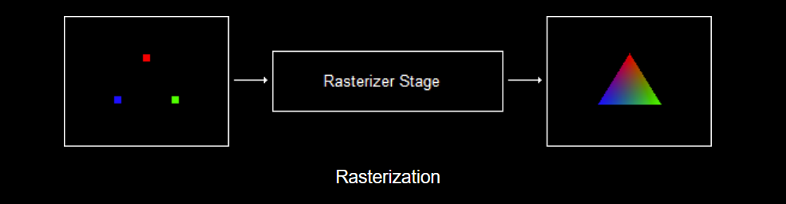
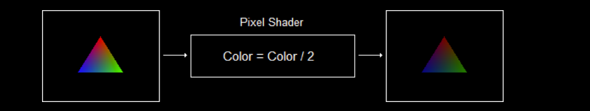

The Input Assembler Stage
管线的第一个阶段, 用来收集数据, 为后续做准备。
| Function | Description |
|---|---|
| IASetVertexBuffers | Tells the input-assembler which vertex buffer to read from. |
| IASetIndexBuffer | This is a new one, and will be covered in the Moving to 3D tutorial. |
| IASetInputLayout | Tells the input-assembler the expected layout of vertex data in each vertex. |
| IASetPrimitiveTopology | Tells the input-assembler what type of primitive (such as triangle-strip, line-list, etc.) |
Vertex Processing
当输入装配阶段完成后, 随之6个阶段:
- Vertex Shader Stage
- Hull Shader Stage
- Tessellator Stage
- Domain Shader Stage
- Geometry Shader Stage
- Stream Output Stage
只有 Vertex Shader Stage是必须的, 其他都是可选。
Pixel Processing
- Rasterizer Stage
- Pixel Shader Stage
光栅化是个固定的流程, 只有Pixel Shader阶段是可以编程的。
Output-Merger Stage
通过像素着色器生成的像素片段会被移送至渲染管线的输出合并阶段。在这个阶段中，一些像素片段需要经过模板测试和深度测试来确定是否能留下，然后必要的时候还需要与绑定的缓冲区对应像素片段进行混合操作，可以实现透明等效果。
顶点处理过程
顶点着色器是管线的第二阶段，能够修改单个顶点的属性。 它通常用于将 3D 坐标转换为屏幕坐标，但也可以更改其他属性。
着色器是一个”函数”, 对每一个顶点都会执行一遍(GPU是并行计算的, 不用担心性能), 随后执行这三个阶段:
- Hull Shader Stage
- Tessellator Stage
- Domain Shader Stage
Geometry Shader Stage
这是一个可选阶段, 和顶点着色器不同的是, 它不针对顶点而是”Primitives”(三角形)。
输入一个三角形, 输出一个三角形。
Stream Output Stage
略
像素处理过程
Once a primitive’s vertices have been placed in screen coordinates, the GPU then renders the pixels. First, it runs the vertices through the rasterizer stage, which determines what pixels are going to be rendered. Second, it runs each pixel through a pixel shader, which allows you to alter the color and depth (distance from the screen) of each pixel.
Rasterizer Stage
光栅化阶段决定使用哪些顶点去绘制”Pirmitive”

使用下面的代码告诉”Raster”使用backbuffer上的哪个范围内的Pixels
// Set the viewport
D3D11_VIEWPORT viewport;
ZeroMemory(&viewport, sizeof(D3D11_VIEWPORT));
viewport.TopLeftX = 0;
viewport.TopLeftY = 0;
viewport.Width = width * 1.0f;
viewport.Height = height * 1.0f;
d3d11_ctx_->RSSetViewports(1, &viewport);
Pixel Shader
着色器是一个”函数”, 对每一个像素都会执行一遍(GPU是并行计算的, 不用担心性能)。
The rasterizer stage plays an important part in the pixel shader’s inputs. It’s job is to give information specific to that pixel.

注: “颜色减半” 这个操作使用顶点着色器更快，这里只是做个示例。
PixelShader不能改变”坐标”!
输出合并阶段
当像素片段由像素着色器生成之后，它们会被传送到渲染管线的输出合并（output merger，简称OM）阶段。在该阶段中，某些像素片段会被丢弃（例如，未能通过深度测试或模板测试）。未丢弃的像素片段会被写入后台缓冲区。混合（blending）工作是在该阶段中完成的，一个像素可以与后台缓冲区中的当前像素进行混合，并以混合后的值作为该像素的最终颜色。某些特殊效果，比如透明度，就是通过混合来实现的；我们会在第9章专门讲解混合。